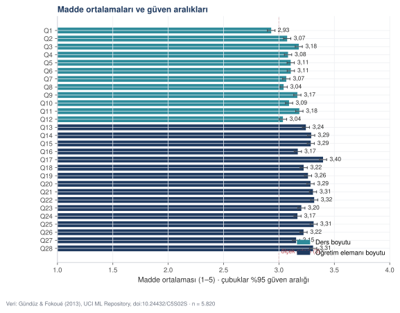
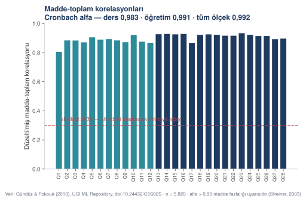
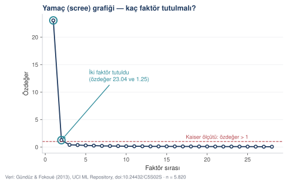
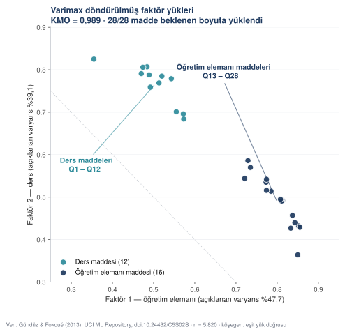

Nicel analiz: on iki adım, gerçek veri
Gazi Üniversitesi'nin 5.820 kayıtlık gerçek ders değerlendirme verisi üzerinde betimsel istatistikten lojistik regresyona on iki analiz. Her sayı koşturuldu, her şekil o çıktıdan üretildi.
Bu bölümdeki her sayı, yanınızdaki veri dosyası üzerinde
kod/05_analiz_sosyal.py betiği koşturularak üretildi. Betiği indirip
kendi makinenizde çalıştırabilir, aynı sayıları alabilirsiniz.
- Künye
- Gündüz, N., & Fokoué, E. (2013). Turkiye Student Evaluation. UCI Machine Learning Repository.
- DOI
- 10.24432/C5S02S
- Lisans
- CC BY 4.0
- Boyut
- 5.820 değerlendirme · 28 Likert maddesi (1–5) · 5 ek değişken · eksik hücre yok
- Pakette
- gazi_ders_degerlendirme.csv · 05_analiz_sosyal.py · sosyal_analiz.txt
Üç öğretim elemanının verdiği on üç dersin dönem sonu değerlendirmeleri. Q1–Q12 dersle, Q13–Q28 öğretim elemanıyla ilgili. Ek değişkenler: öğretim elemanı kimliği, ders kodu, dersi kaçıncı kez aldığı, derse katılım düzeyi (0–4), dersi algılanan güçlüğü (1–5).
Analizi yürüten ana istem
Aşağıdaki istem, on iki analiz adımının tamamını tek bir betiğe dönüştürdü. Uzun ama bir kez yazılır; sonraki çalışmalarınızda değişkenleri değiştirip yeniden kullanırsınız.
ROL Eğitim bilimlerinde ölçme ve değerlendirme üzerine çalışan bir istatistik danışmanısın. Çıktıların bir dergi makalesinin Bulgular bölümüne doğrudan girecek. KAYNAK — gazi_ders_degerlendirme.csv — 5.820 satır. Q1–Q28 beşli Likert (1 = kesinlikle katılmıyorum, 5 = kesinlikle katılıyorum). instr (1–3), class (1–13), nb.repeat (1–3), attendance (0–4), difficulty (1–5). Eksik hücre yok. — gazi_madde_sozlugu.csv — her maddenin hangi boyuta ait olduğu. Q1–Q12 ders, Q13–Q28 öğretim elemanı. GÖREV Aşağıdaki on iki adımı sırayla yürüten, yorumlanmış bir Python betiği yaz. Betik hem okunur metin hem makine okunur JSON çıktı versin. ADIMLAR 1. Betimsel istatistik — ölçek puanları ve madde bazında 2. Dağılım varsayımının denetimi 3. Güvenilirlik — Cronbach alfa, madde-toplam, madde silinirse alfa 4. Açımlayıcı faktör analizi — KMO, Bartlett, özdeğer, varimax 5. İki grup karşılaştırması — bağımsız örneklem t testi 6. Üç ve daha fazla grup — tek yönlü ANOVA + post-hoc 7. Parametrik olmayan karşılıklar — Mann–Whitney, Kruskal–Wallis 8. Korelasyon matrisi — Pearson ve Spearman 9. Çoklu doğrusal regresyon — VIF, Breusch–Pagan, Durbin–Watson 10. Lojistik regresyon — olasılık oranı, AUC 11. Ki-kare bağımsızlık testi — Cramér V 12. Anlamlılık ile etki büyüklüğünün ayrımını gösteren bir denetim HER ADIM İÇİN ZORUNLU — Adımın başına iki satır yaz: "Nedir" ve "Neden bu adım burada" — Testin varsayımını denetle ve sonucu bas; sağlanmıyorsa düzeltilmiş sürümü kullan ve bunu belirt — Etki büyüklüğünü hesapla ve yorum eşiğini yaz — Çıktıyı hem ekrana hem JSON'a yaz BETİĞİN ÖZELLİKLERİ — Değişken ve fonksiyon adları Türkçe — Her fonksiyon docstring'inde formülü ve ne zaman kullanıldığı — Rastgelelik içeren her yerde sabit tohum: 20261103 — Dışarıdan tek bir ek kütüphane bile gerekmesin diyemem; gerekenleri başta içe aktar ve her birinin neden gerektiğini yorumla SINIRLAR — Veride olmayan hiçbir sayı üretme. — "Ölçek güvenilirdir", "model iyidir" gibi değerlendirme cümleleri kurma; sayıyı ver, eşiği söyle, yorumu bana bırak. — Yüksek alfa ya da yüksek R kare gördüğünde bunu olumlu okuma; ne anlama gelebileceğini her iki yönden yaz. — Hiçbir aykırı değeri kendiliğinden silme. DENETİM Betiğin sonunda: kaç analiz bloğu üretildiğini, çıktı dosyalarının yollarını ve her ölçek puanının betimsel istatistiğini bas.
ROL
Eğitim bilimlerinde ölçme ve değerlendirme üzerine çalışan bir
istatistik danışmanısın. Çıktıların bir dergi makalesinin Bulgular
bölümüne doğrudan girecek.
KAYNAK
— gazi_ders_degerlendirme.csv — 5.820 satır. Q1–Q28 beşli Likert
(1 = kesinlikle katılmıyorum, 5 = kesinlikle katılıyorum).
instr (1–3), class (1–13), nb.repeat (1–3), attendance (0–4),
difficulty (1–5). Eksik hücre yok.
— gazi_madde_sozlugu.csv — her maddenin hangi boyuta ait olduğu.
Q1–Q12 ders, Q13–Q28 öğretim elemanı.
GÖREV
Aşağıdaki on iki adımı sırayla yürüten, yorumlanmış bir Python
betiği yaz. Betik hem okunur metin hem makine okunur JSON çıktı
versin.
ADIMLAR
1. Betimsel istatistik — ölçek puanları ve madde bazında
2. Dağılım varsayımının denetimi — Kolmogorov–Smirnov, çarpıklık,
basıklık
3. Güvenilirlik — Cronbach alfa, düzeltilmiş madde-toplam
korelasyonu, madde silinirse alfa
4. Açımlayıcı faktör analizi — KMO, Bartlett, özdeğerler; faktör sayısını
Kaiser ölçütü ve yamaç grafiğiyle VERİDEN belirle, sonra o sayıda faktörle
varimax döndürme uygula
5. İki grup karşılaştırması — bağımsız örneklem t testi
(öğretim puanı, katılım 0–1 ile 3–4 arası)
6. Üç ve daha fazla grup — tek yönlü ANOVA (ders puanı, beş
güçlük düzeyi) + Tukey HSD
7. Parametrik olmayan karşılıklar — Mann–Whitney U,
Kruskal–Wallis H, etki büyüklükleriyle
8. Korelasyon matrisi — Pearson ve Spearman, p değerleri ve
r kare ile
9. Çoklu doğrusal regresyon — ogretim_puan ~ attendance +
difficulty + nb.repeat + C(instr); VIF, Breusch–Pagan,
Durbin–Watson
10. Lojistik regresyon — sonuç: genel puan ≥ 4; olasılık oranları,
%95 güven aralıkları, AUC
11. Ki-kare bağımsızlık testi — instr × attendance, Cramér V
12. Anlamlılık ile etki büyüklüğünün ayrımını gösteren bir denetim:
aynı ilişkiyi artan örneklem büyüklüklerinde yeniden ölç
HER ADIM İÇİN ZORUNLU
— Adımın başına iki satır yaz: "Nedir" ve "Neden bu adım burada"
— Testin varsayımını denetle ve sonucu bas; sağlanmıyorsa
düzeltilmiş sürümü kullan (Welch, Alexander–Govern) ve bunu
belirt
— Etki büyüklüğünü hesapla ve yorum eşiğini yaz
— Çıktıyı hem ekrana hem JSON'a yaz
BETİĞİN ÖZELLİKLERİ
— Değişken ve fonksiyon adları Türkçe
— Her fonksiyon docstring'inde formülü ve ne zaman kullanıldığı
— Rastgelelik içeren her yerde sabit tohum: 20261103
— Gereken kütüphaneleri başta içe aktar ve her birinin neden
gerektiğini yorumla
— Cronbach alfa ve varimax döndürmeyi dışarıdan paket beklemeden,
formülünden hesapla; hesabın ne olduğu kodda görünsün
SINIRLAR
— Veride olmayan hiçbir sayı üretme.
— "Ölçek güvenilirdir", "model iyidir" gibi değerlendirme
cümleleri kurma; sayıyı ver, eşiği söyle, yorumu bana bırak.
— Yüksek alfa ya da yüksek R kare gördüğünde bunu olumlu okuma;
ne anlama gelebileceğini her iki yönden yaz.
— Hiçbir aykırı değeri kendiliğinden silme.
— 12. adımda iki ayrı olguyu karıştırma: küçük örneklemde
katsayının DALGALANMASI ile aynı katsayının büyük örneklemde
ANLAMLI ÇIKMASI farklı şeylerdir. İkisini ayrı panel olarak
göster.
DENETİM
Betiğin sonunda: kaç analiz bloğu üretildiğini, çıktı dosyalarının
yollarını ve her ölçek puanının betimsel istatistiğini bas.Adım 1 — Betimsel istatistik
| Değişken | n | Ortalama | SS | Ortanca | Min | Maks | Çarpıklık | Basıklık |
|---|---|---|---|---|---|---|---|---|
| Ders puanı | 5.820 | 3,089 | 1,180 | 3,000 | 1,0 | 5,0 | −0,177 | −0,747 |
| Öğretim puanı | 5.820 | 3,259 | 1,193 | 3,188 | 1,0 | 5,0 | −0,416 | −0,616 |
| Genel puan | 5.820 | 3,186 | 1,158 | 3,071 | 1,0 | 5,0 | −0,330 | −0,607 |
| Derse katılım | 5.820 | 1,676 | 1,475 | 1,000 | 0 | 4 | 0,230 | −1,411 |
| Algılanan güçlük | 5.820 | 2,784 | 1,349 | 3,000 | 1 | 5 | −0,009 | −1,182 |
| Dersi tekrar sayısı | 5.820 | 1,214 | 0,532 | 1,000 | 1 | 3 | 2,437 | 4,784 |
Okuma: İlk beş değişkenin çarpıklık ve basıklığı ±1,5 bandındadır. "Dersi tekrar sayısı" ise belirgin biçimde çarpıktır (2,437) ve sivridir (4,784) — beklenen bir sonuçtur, çünkü öğrencilerin çoğu dersi ilk kez almaktadır. Bu değişken sürekli bir yordayıcı olarak kullanılırken bu özellik akılda tutulmalıdır.



Adım 2 — Dağılım varsayımının denetimi
ders_puan : K–S D = 0,1084 p = 5,22e-60
çarpıklık = −0,177 basıklık = −0,747
ogretim_puan : K–S D = 0,1314 p = 3,95e-88
çarpıklık = −0,416 basıklık = −0,616Adım 3 — Güvenilirlik
| Ölçek | Madde sayısı | Cronbach alfa |
|---|---|---|
| Ders boyutu | 12 | 0,983 |
| Öğretim elemanı boyutu | 16 | 0,991 |
| Tüm ölçek | 28 | 0,992 |
Düzeltilmiş madde-toplam korelasyonları 0,804 (Q1) ile 0,933 (Q23) arasındadır. 0,30 eşiğinin altında kalan madde sayısı: 0. Hiçbir maddenin çıkarılması ölçeğin alfasını yükseltmemektedir.



Adım 4 — Açımlayıcı faktör analizi
Açımlayıcı faktör analizi, birbiriyle ilişkili çok sayıda maddenin arkasında kaç ortak boyut bulunduğunu veriden çıkarır. Yirmi sekiz maddelik bir ankette sorulan soru şudur: bu maddeler gerçekte kaç ayrı şeyi ölçüyor ve hangi madde hangi boyuta ait? "Açımlayıcı" sözcüğü, boyut yapısının önceden dayatılmadığını, veriden okunduğunu belirtir.
KMO (örneklem yeterliği) : 0,9885 (> 0,90 "mükemmel") Bartlett küresellik testi : khi-kare = 297.891,4 p < 0,001 1'den büyük özdeğer sayısı : 2 İlk dört özdeğer : 23,041 · 1,253 · 0,395 · 0,361 İki faktörlü varimax döndürmesi Faktör 1 açıklanan varyans : %47,7 Faktör 2 açıklanan varyans : %39,1 Toplam açıklanan varyans : %86,8 Beklenen iki boyutlu yapıya uyan madde : 28/28






Adım 5 — İki grup karşılaştırması
Soru: Derse çok katılan öğrenciler öğretim elemanını farklı mı değerlendiriyor?
İki grubun ortalaması bağımsız örneklem t testiyle karşılaştırılır. Bu test, grupların yayılımının birbirine yakın olmasını varsayar; Levene testi tam bu varsayımı denetler. Varsayım karşılanmadığında, farklı yayılımlara dayanıklı olan Welch sürümü kullanılır. Test istatistiğinin yanındaki parantez içindeki sayı serbestlik derecesidir: testin kaç bağımsız bilgi üzerinden hesaplandığını gösterir.
Grup A — düşük katılım (0–1) : n = 2.930 ort = 3,032 ss = 1,256
Grup B — yüksek katılım (3–4): n = 2.098 ort = 3,540 ss = 1,096
Levene varyans eşitliği : W = 30,100 p < 0,001
→ varyanslar eşit DEĞİL, Welch düzeltmesi
Welch t(4.834) = 15,232 p < 0,001
Cohen d = 0,426 → KÜÇÜK ile ORTA arası etkiAdım 6 — Üç ve daha fazla grup
Soru: Dersi güç bulan öğrenciler dersi farklı mı değerlendiriyor?
İkiden çok grup karşılaştırıldığı için tek yönlü ANOVA kullanılır. ANOVA yalnız "gruplar arasında bir fark var mı" sorusunu yanıtlar; farkın hangi gruplar arasında olduğunu söylemez. Bunu söylemek için ardından ikili karşılaştırmalar yapılır. Tukey HSD, karşılaştırma sayısı arttıkça rastlantıyla anlamlı sonuç bulma olasılığının da artmasını hesaba katan bir yöntemdir. Grupların yayılımı eşit olmadığında ANOVA'nın Alexander–Govern düzeltmesi raporlanır; bu, eşit olmayan varyanslara dayanıklı sürümdür.
| Algılanan güçlük | n | Ders puanı ortalaması | SS |
|---|---|---|---|
| 1 — çok kolay | 1.620 | 2,828 | 1,339 |
| 2 | 549 | 3,134 | 1,072 |
| 3 | 1.774 | 3,343 | 1,031 |
| 4 | 1.225 | 3,213 | 1,025 |
| 5 — çok güç | 652 | 2,772 | 1,288 |
Levene: W = 47,778, p < 0,001 → varyanslar eşit değil F(4, 5.815) = 57,797, p < 0,001 Alexander–Govern düzeltmesi: A = 209,886, p < 0,001 eta kare = 0,038 → güçlük algısı, ders puanındaki değişkenliğin yalnız %3,8'ini açıklıyor
Tukey HSD — on ikili karşılaştırma
| Karşılaştırma | Ortalama farkı | Anlamlı mı |
|---|---|---|
| 1 ↔ 2 | +0,305 | evet |
| 1 ↔ 3 | +0,514 | evet |
| 1 ↔ 4 | +0,384 | evet |
| 1 ↔ 5 | −0,057 | hayır |
| 2 ↔ 3 | +0,209 | evet |
| 2 ↔ 4 | +0,079 | hayır |
| 2 ↔ 5 | −0,362 | evet |
| 3 ↔ 4 | −0,130 | evet |
| 3 ↔ 5 | −0,571 | evet |
| 4 ↔ 5 | −0,441 | evet |


Adım 7 — Parametrik olmayan karşılıklar
Aynı iki soru, bu kez sıra temelli testlerle yanıtlanıyor. Mann–Whitney iki grup için t testinin, Kruskal–Wallis ikiden çok grup için ANOVA'nın karşılığıdır. Bu testler puanların kendisini değil, bütün kayıtlar birlikte sıralandığında aldıkları sıra numaralarını kullanır. Yanlarında verilen sıra-noktasal r ve epsilon kare bu testlerin etki büyüklükleridir; sırasıyla Cohen d ile eta kare'nin yerini tutar.
Mann–Whitney U = 3.778.992 p < 0,001 sıra-noktasal r = 0,230 → t testiyle AYNI yönde sonuç; karar varsayıma bağlı değil Kruskal–Wallis H(4) = 195,877 p < 0,001 epsilon kare = 0,033 → ANOVA ile AYNI yönde sonuç; etki büyüklüğü de benzer (0,038 / 0,033)
Adım 8 — Korelasyon
Korelasyon katsayısı, iki değişkenin birlikte değişip değişmediğini −1 ile +1 arasında bir sayıyla verir. Pearson r bu birlikte değişimi doğrusal bir ilişki varsayarak ölçer; Spearman rho ise değerler yerine sıra numaralarını kullandığı için ilişki doğrusal olmasa da, uç değerler bulunsa da bozulmaz. İkisinin birbirine yakın çıkması, okunan ilişkinin ölçüm biçimine bağlı olmadığını gösterir. r kare katsayının karesidir ve bir değişkendeki değişkenliğin ne kadarının öteki değişkenle paylaşıldığını verir.


| Değişken çifti | Pearson r | p | r kare | Spearman rho |
|---|---|---|---|---|
| Ders puanı – Öğretim puanı | 0,902 | < 0,001 | 0,813 | 0,882 |
| Katılım – Güçlük | 0,437 | < 0,001 | 0,191 | 0,449 |
| Öğretim puanı – Katılım | 0,200 | < 0,001 | 0,040 | 0,188 |
| Ders puanı – Katılım | 0,161 | < 0,001 | 0,026 | 0,151 |
| Güçlük – Tekrar sayısı | 0,110 | < 0,001 | 0,012 | 0,105 |
| Öğretim puanı – Güçlük | 0,089 | < 0,001 | 0,008 | 0,065 |
| Katılım – Tekrar sayısı | −0,078 | < 0,001 | 0,006 | −0,071 |
| Ders puanı – Güçlük | 0,060 | < 0,001 | 0,004 | 0,047 |
| Öğretim puanı – Tekrar sayısı | −0,044 | 0,0007 | 0,002 | −0,053 |
| Ders puanı – Tekrar sayısı | −0,033 | 0,012 | 0,001 | −0,041 |
Adım 9 — Çoklu doğrusal regresyon
Çoklu regresyon bir sonucu birden çok değişkenle birlikte yordar ve her değişkenin katkısını, öteki değişkenler sabit tutulmuş gibi verir. Tablodaki B, ilgili değişken bir birim arttığında sonucun ne kadar değiştiğidir; SH (standart hata) bu tahminin belirsizliğidir. Yordayıcılar birbirine çok benzediğinde katsayılar güvenilmez hâle gelir; VIF bu durumu ölçer ve değerin büyümesi aynı bilginin modele birden çok kez girdiği anlamına gelir.
Model: öğretim puanı ~ katılım + güçlük + tekrar sayısı + öğretim elemanı (kategorik)
R kare = 0,0531 · düzeltilmiş R kare = 0,0523 F(5, 5.814) = 65,198, p < 0,001
| Terim | B | SH | t | p | %95 GA |
|---|---|---|---|---|---|
| Sabit | 3,127 | 0,063 | 50,06 | < 0,001 | [3,004 – 3,249] |
| Derse katılım | 0,150 | 0,012 | 12,90 | < 0,001 | [0,127 – 0,173] |
| Algılanan güçlük | 0,008 | 0,013 | 0,64 | 0,522 | [−0,017 – 0,033] |
| Dersi tekrar sayısı | −0,038 | 0,029 | −1,30 | 0,193 | [−0,096 – 0,019] |
| Öğretim elemanı 2 (ref: 1) | 0,106 | 0,052 | 2,04 | 0,042 | [0,004 – 0,208] |
| Öğretim elemanı 3 (ref: 1) | −0,196 | 0,046 | −4,23 | < 0,001 | [−0,287 – −0,105] |
Varsayım denetimleri VIF: tümü 1,05 – 2,19 arasında (10 eşiğinin çok altında, çok doğrusallık yok) Breusch–Pagan: LM = 126,967, p < 0,001 → artık varyansı sabit değil Durbin–Watson: 1,938 → artıklar bağımsız (2'ye çok yakın)


Adım 10 — Lojistik regresyon
Soru: Bir değerlendirmenin "yüksek" (genel puan ≥ 4) olma olasılığını ne belirliyor?
Sonuç burada bir puan değil, iki şıklı bir durumdur: değerlendirme yüksektir ya da değildir. Böyle bir sonuç için doğrusal regresyon yerine lojistik regresyon kullanılır; model her kayıt için "yüksek" olma olasılığını tahmin eder. Doğrusal modeldeki R kare'nin burada doğrudan bir karşılığı yoktur. McFadden sözde R kare, modelin hiç yordayıcı içermeyen bir modele göre ne kadar iyileştiğini gösteren yaklaşık bir ölçüdür ve R kare gibi "açıklanan varyans" diye okunmaz.
Sonuç değişkeni: genel puan ≥ 4 1 (yüksek): 1.863 (%32,0) · 0 (diğer): 3.957
| Terim | B | p | OR | %95 GA |
|---|---|---|---|---|
| Derse katılım | 0,178 | < 0,001 | 1,195 | [1,145 – 1,247] |
| Algılanan güçlük | −0,085 | < 0,001 | 0,918 | [0,875 – 0,963] |
| Dersi tekrar sayısı | −0,041 | 0,475 | 0,960 | [0,859 – 1,073] |
| Öğretim elemanı 2 (ref: 1) | −0,172 | 0,061 | 0,842 | [0,704 – 1,008] |
| Öğretim elemanı 3 (ref: 1) | −0,651 | < 0,001 | 0,521 | [0,443 – 0,614] |
McFadden sözde R kare = 0,0245 ROC eğrisi altındaki alan (AUC) = 0,601
Adım 11 — Ki-kare
| Öğretim elemanı | Katılım 0 | 1 | 2 | 3 | 4 |
|---|---|---|---|---|---|
| 1 | 166 | 152 | 107 | 217 | 133 |
| 2 | 396 | 291 | 211 | 317 | 229 |
| 3 | 1.340 | 585 | 474 | 718 | 484 |
khi-kare(8) = 105,178 p < 0,001 Cramér V = 0,095 → zayıf ilişki Beklenen frekansı 5'ten küçük hücre: 0 / 15 (ölçüt: %20'den az olmalı) ✓
Adım 12 — Anlamlılık ile etki büyüklüğünün ayrımı
Son adım bir test değil, bir denetim. İki kavram burada açıkça ayrılıyor: istatistiksel anlamlılık, gözlenen farkın rastlantıyla ortaya çıkma olasılığının düşük olduğunu söyler; etki büyüklüğü, farkın ne kadar büyük olduğunu söyler. Yukarıdaki on bir adımda üç kez karşılaştığımız durum, bu ikisinin birbirinin yerine kullanılmasıdır.
Ölçülen ilişki: ders puanı – güçlük algısı. Tüm veride r = 0,060, r kare = 0,0036 (açıklanan varyans %0,36).
| n | r ortalaması | r %2,5 | r %97,5 | p < 0,05 çıkma oranı |
|---|---|---|---|---|
| 30 | 0,051 | −0,328 | 0,471 | %7 |
| 50 | 0,049 | −0,238 | 0,314 | %8 |
| 100 | 0,067 | −0,128 | 0,272 | %12 |
| 300 | 0,060 | −0,062 | 0,184 | %20 |
| 1.000 | 0,059 | 0,006 | 0,114 | %45 |
| 3.000 | 0,060 | 0,033 | 0,086 | %96 |
| n | r | t | p | Karar |
|---|---|---|---|---|
| 30 | 0,060 | 0,319 | 0,752 | anlamsız |
| 50 | 0,060 | 0,417 | 0,678 | anlamsız |
| 100 | 0,060 | 0,596 | 0,552 | anlamsız |
| 300 | 0,060 | 1,040 | 0,299 | anlamsız |
| 1.000 | 0,060 | 1,904 | 0,057 | anlamsız |
| 5.820 | 0,060 | 4,596 | < 0,001 | anlamlı |
| 20.000 | 0,060 | 8,521 | < 0,001 | anlamlı |
Bulgular bölümünü yazmak
ROL Eğitim bilimleri alanında yayın yapan bir araştırmacı olarak bir dergi makalesinin Bulgular bölümünü yazıyorsun. KAYNAK Ekte analiz çıktısı var: sosyal_analiz.txt ve sosyal_analiz.json. On iki analiz bloğu içeriyor. GÖREV Bulgular bölümünü yaz. YAPI — Alt başlıklar araştırma sorularına göre, analiz adımlarına göre değil — Her alt başlık: önce bulgu cümlesi, sonra destekleyici sayılar, sonra ilgili tablo/şekil göndermesi — Tablolar metnin içinde değil, "Tablo 1" gibi numaralanıp metinden gönderme yapılarak HER İSTATİSTİKSEL SONUÇ İÇİN ZORUNLU test istatistiği + serbestlik derecesi + p değeri + etki büyüklüğü. Dördü eksikse cümle yazma. SAYI BİÇİMİ — Ondalık ayracı virgül — p < 0,001'den küçükse "p < 0,001" yaz, bilimsel gösterim kullanma — Binlik ayracı nokta (5.820) ÜSLUP — Resmî akademik Türkçe, edilgen anlatım — Bulguları YORUMLAMA. Tartışma bölümü ayrı. Burada ne bulunduğu yazılır, ne anlama geldiği değil. — "Beklendiği gibi", "ilginç biçimde" gibi değerlendirme ifadeleri kullanma SINIRLAR — Çıktıda olmayan hiçbir sayı yazma. — Yuvarlarken değer değiştirme; üç ondalık basamak kullan. — Anlamsız çıkan sonuçları atlama. p = 0,522 çıkan güçlük katsayısı da raporlanır. — Düşük R kare'yi ya da düşük AUC'yi gizleme ya da yumuşatma; olduğu gibi yaz. DENETİM Bölümün sonuna bir kontrol listesi ekle: — Kaç istatistiksel sonuç raporlandı? — Bunların kaçında etki büyüklüğü var? — İkisi eşit değilse hangi sonuçta etki büyüklüğü eksik?
ROL Bir dergi makalesinin Bulgular bölümünü yazıyorsun. Hedef dergi bir birinci basamak sağlık hizmetleri dergisi; okurları aile hekimleri. KAYNAK Ekte analiz çıktısı var: analiz_sonuc.txt ve analiz_sonuc.json. Dokuz analiz bloğu içeriyor. Ayrıca CONSORT akış şeması sayıları ve üç tablo. ÇALIŞMA Tip 2 diyabet hastalarında haftalık telefon hatırlatmasının ilaç uyumuna etkisi. İki kollu, altı ay izlemli. Müdahale 148, kontrol 152 hasta. Birincil sonuç: ilaç uyum ölçeği puanı. İkincil sonuç: HbA1c değişimi. GÖREV Bulgular bölümünü yaz. YAPI — Önce katılımcı akışı ve başlangıç özellikleri (Tablo 1) — Sonra birincil sonuç — Sonra ikincil sonuç — Sonra alt grup analizleri (önceden planlanmış olanlar) — Son olarak istenmeyen olaylar ve çalışmadan ayrılmalar HER SONUÇ İÇİN DÖRT SAYI ZORUNLU test istatistiği · serbestlik derecesi · p değeri · etki büyüklüğü Dördü birden yoksa o cümleyi yazma; eksik olanı bana bildir. ÜSLUP — Resmî akademik Türkçe, edilgen anlatım — Klinik okur için kısa cümle; her bulgu tek paragraf KLİNİK ÇALIŞMAYA ÖZGÜ KURALLAR — Gruplar arası farkı mutlak ve göreli olarak birlikte ver: hem ortalama fark hem yüzde değişim. — Güven aralığı zorunlu; klinik okur p değerinden çok aralığa bakar. — Tedaviye niyet (intention-to-treat) analizi mi, protokole uyan (per-protocol) analizi mi? Hangisi raporlandığını her sonuçta belirt. — Çalışmadan ayrılanların sayısı ve nedeni mutlaka yazılsın. SAYI BİÇİMİ — Ondalık ayracı virgül, binlik ayracı nokta — p < 0,001 ise "p < 0,001" yaz — HbA1c için bir ondalık, ölçek puanı için bir ondalık SINIRLAR — Bulguyu YORUMLAMA. "Bu, müdahalenin etkili olduğunu göstermektedir" cümlesi kurma. — "Beklendiği gibi", "umut verici" gibi değerlendirme ifadeleri kullanma. — Anlamsız çıkan sonuçları atlama; ikincil sonuç anlamsızsa olduğu gibi raporla. — Alt grup analizlerinde anlamlı çıkanı öne çıkarma; hepsini birlikte ver ve önceden planlanmış olduklarını belirt. — Klinik anlamlılık hakkında hüküm verme; bu Tartışma'nın işi. DENETİM Bölüm sonunda bir kontrol listesi: — Kaç istatistiksel sonuç raporlandı? — Kaçında güven aralığı var? — Kaçında etki büyüklüğü var? — Katılımcı sayıları akış şemasıyla tutuyor mu? (148 + 152 = 300; ayrılanlar düşülünce analize giren sayı kaç?)
Bu bölümden alınacaklar
Betimsel istatistik süs değildir; test seçiminin girdisidir.
Büyük örneklemde normallik testi p değerine değil, çarpıklık/basıklık büyüklüğüne bakılarak yorumlanır.
Yüksek Cronbach alfa (> 0,90) madde fazlalığı uyarısıdır, kusursuzluk belgesi değil.
Sıfıra yakın korelasyon, ilişki yok demek değildir. Ders puanı ile güçlük arasında r = 0,06 ama ANOVA'da F = 57,8 — ilişki ters U biçimli.
Regresyon, korelasyonun gizlediğini gösterir: güçlük tek başına anlamlıyken, katılım denetlendiğinde anlamsız.
Her sonuçta dört sayı: test istatistiği, serbestlik derecesi (testin kaç bağımsız bilgi üzerinden hesaplandığını gösteren ve parantez içinde yazılan sayı), p ve etki büyüklüğü. Dördüncüsü olmadan cümle kurulmaz.
Akademide Üretken Yapay Zekâ — uygulamalı kurs. Hazırlayan: Dr. Mehmet Sevri, Recep Tayyip Erdoğan Üniversitesi. Bu sayfadaki bütün sayısal çıktılar, yanındaki kod ve veri dosyalarıyla yerel olarak üretilmiştir; hiçbiri elle yazılmamıştır.
Kullanılan gerçek veri setleri CC BY 4.0 ile dağıtılmaktadır ve kaynakları ilgili bölümde künyeleriyle verilmiştir. Sentetik veri kullanılan yerler açıkça işaretlenmiştir.
Buradaki istemler ve çıktılar öğretim malzemesidir. Yapay zekâ araçlarının kullanımından doğan hatalardan, uydurma kaynaklardan ve bunların yer aldığı çalışmalardan kurs ve hazırlayanı sorumlu tutulamaz; sorumluluk aracı kullanan araştırmacıya aittir. Sorumluluk ve etik beyanı · Dr. Mehmet Sevri — kişisel sayfa